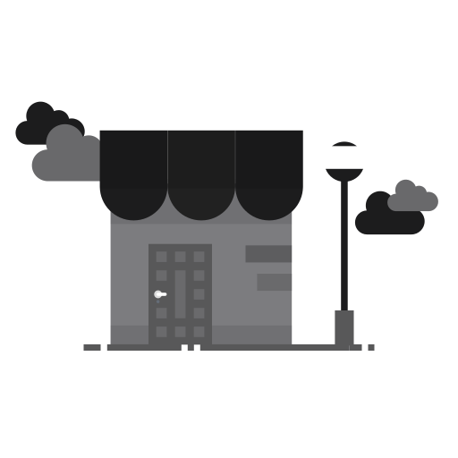

<div class="tab_header" [ngStyle]="{'margin-top' : hideHeader}">Mes bars</div>

<!-- Custom Refresher Start -->
<div class="cpr_frontdrop" [ngStyle]="{'display' : popFD}"></div>
<div class="cp_refresher_wrapper" [ngStyle]="{'transform' : posY, 'transition' : animDur}">
  <div class="custom_pull_refresher"></div>
</div>
<ion-content [ngStyle]="{'opacity' : mainOpac}" [forceOverscroll]="false" *ngIf="ifHasConnection" color="secondary" class="mainContent" [scrollEvents]="true" (ionScroll)="scrollEvent($event)" (touchmove)="pull($event)" (touchstart)="pullstart($event)" (touchend)="endpull()">
      <div class="ion_content_wrapper">
          <ion-list *ngFor="let bars of items; let i = index">
              <ion-item no-padding color="secondary" lines="none">
                
                <div class="img_curtain_black" [ngClass]="{'isLoaded': bars.ENT_PRELOAD_NAME === true}" [ngStyle]="{'display' : ifLoadedAlreadyFave}"></div>
                <div (click)="moveToBar(bars.ENT_ID)" class="img-overlay"></div>
                
                <div (click)="moveToBar(bars.ENT_ID)" class="bar-details">
                <div class="off_desc"><ion-icon name="bookmark"></ion-icon><p>{{bars.ENT_NOM}}</p></div>
                <p class="ent_nom">{{bars.ENT_ADRESSE}}</p>
                </div>  
              </ion-item>
          </ion-list>
      </div>

      <div *ngIf="items == null" class="empty_fave_wrapper">
        <div class="empty_fave">
          
          <h1>Votre boîte de favoris est vide</h1>
        </div>
      </div>
</ion-content>

<ion-content [ngStyle]="{'opacity' : mainOpac}" [forceOverscroll]="false" *ngIf="!ifHasConnection" color="secondary" class="mainContent noConnContent" [scrollEvents]="true" (ionScroll)="scrollEvent($event)" (touchmove)="pull($event)" (touchstart)="pullstart($event)" (touchend)="endpull()">
    <div class="no_connection">
      
      <h1>Veuillez vous assurer que votre appareil est connecté au réseau.</h1>
    </div>
</ion-content>

